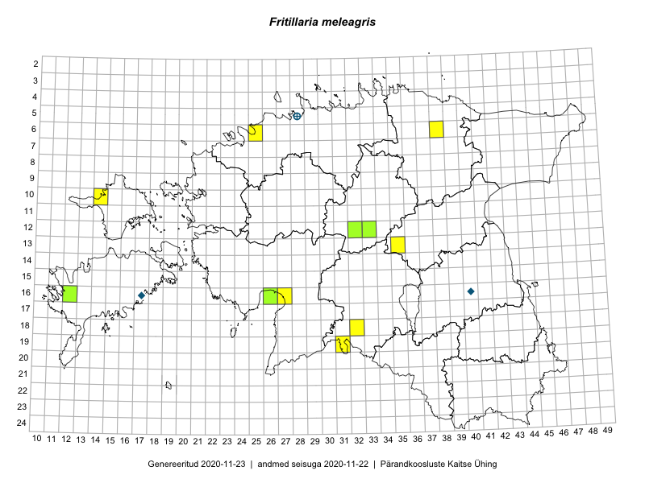

Fritillaria meleagris — kirju püvilill
Liliaceae :: Fritillaria meleagris L. (26)

Kaart põhineb 26 kirjel:
vaatlusi 10
herbaareksemplare 16
Taime kaasaegsed ja ajaloolised leiukohad asuvad 14 ruudus.
Tingmärgid ja ruutude arvud periooditi (U1 / V2 )
█ 2006–2020 (11/–)
◆/◇ 1971–2005 (2/0)
○ 1921–1970 (1/0)
+ kuni 1920 (1/0)
× hävinud (–/0)
? kaheldav (–/0)
| Ruut | Leidja(d) | Leiuaeg | Kirje |
|---|---|---|---|
| 12-32 | Peedu Saar, Timo Luhamäe | 2015-05-10 | ruut/ala: Fritillaria meleagris L. |
| 12-33 | Toomas Kukk, Indrek Tammekänd | 2015-05-10 | ruut/ala: Fritillaria meleagris L. |
| 06-38 | Toomas Kukk, Raivo Kalle | 2015-05-13 | ruut/ala: Fritillaria meleagris L. |
| 06-25 | Jana-Maria Habicht | 2015-04-25 | ruut/ala: Fritillaria meleagris L. |
| 16-12 | Mari Reitalu, Toomas Kukk | 2014-06-20 | ruut/ala: Fritillaria meleagris L. |
| 19-31 | Ott Luuk, Indrek Tammekänd | 2015-05-22 | ruut/ala: Fritillaria meleagris L. |
| 13-35 | Ott Luuk, Liina Oja | 2015-05-11 | ruut/ala: Fritillaria meleagris L. |
| 10-14 | Toomas Kukk, Peedu Saar | 2016-05-07 | ruut/ala: Fritillaria meleagris L. |
| 16-27 | Indrek Tammekänd | 2015-05-13 | ruut/ala: Fritillaria meleagris L. |
| 18-32 | Thea Kull, Peedu Saar | 2017-05-04 | ruut/ala: Fritillaria meleagris L. |
| 05-28 | E. Niclasen | 1909-05-29 | TAM0077096: Fritillaria meleagris L. |
| 16-17 | M. Kask | 1973-06-30 | TAA0058886: Fritillaria meleagris L. |
| 05-28 | Gustav Vilbaste | 1937-05-21 | TAA0058887: Fritillaria meleagris L. |
| 16-40 | G. Muuga | 1977-05-11 | TAA0058888: Fritillaria meleagris L. |
| 12-32 | Peedu Saar, Timo Luhamäe | 2015-05-10 | TAA0135323: Fritillaria meleagris L. |
| 05-28 | Joh. Aidas | 1910-05-02 | TU311414: Fritillaria meleagris L. |
| 05-28 | Joh. Aidas | 1910-05-02 | TU311415: Fritillaria meleagris L. |
| 05-28 | Paul Wasmuth | 1911-05-12 | TAM0131644: Fritillaria meleagris L. |
| 05-28 | Paul Wasmuth | 1911-05-12 | TAM0131645: Fritillaria meleagris L. |
| 05-28 | Paul Wasmuth | 1911-05-12 | TAM0132236: Fritillaria meleagris L. |
| 16-12 | Mari Reitalu, Toomas Kukk | 2014-06-20 | TAA0113466: Fritillaria meleagris L. |
| 12-33 | Indrek Tammekänd, Toomas Kukk | 2015-05-10 | TAA0114768: Fritillaria meleagris L. |
| 16-26 | Indrek Tammekänd | 2017-05-17 | TAA0143317: Fritillaria meleagris L. |
| 05-28 | R. Wiren | 1886-06 | TU311419: Fritillaria meleagris L. |
| 05-28 | 1881-05 | TU311420: Fritillaria meleagris L. | |
| 05-28 | R. Wiren | 1881-05 | TU311421: Fritillaria meleagris L. |
Ruutude arv uue atlase andmekogu järgi. Muuhulgas arvestab vanemat herbaariumi, 2005. aasta atlase välitöölehtedelt uuesti digitaliseeritud andmeid jne. Uue atlase andmekogust pärinevad andmed on kaardile kantud siniste sümbolitega.↩︎
Ruutude arv 2005. aasta atlase (Kukk, T., Kull, T., Eesti taimede levikuatlas. Eesti Maaülikool, Põllumajandus- ja Keskkonnainstituut, Tartu, 2005) järgi. Andmeallikana on kasutatud levik.exe programmi, kus igas ruudus on registreeritud vaid uusim leid. Seetõttu on vanemate perioodide kohta andmed puudulikud. Kasutatud levik.exe andmestikus leidub mõningaid kõrvalekaldeid atlase trükis ilmunud versioonist, sagedamini tarnade ja käpaliste seas. Lisaks leidub selles andmestikus valik liike (peamiselt väheste leidudega tulnuktaimed), mille kaarte trükis ei avaldatud. Vana atlase andmed ruutudest, milles ei ole uue atlase andmekogus leide enne 2006. aastat, on kaardil esitatud punaste sümbolitega. Vana atlase andmetel hävinud ja kaheldavaid leiukohti pole hilisemate (taas)leidude põhjal korrigeeritud.↩︎